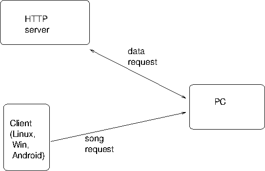

This chapter explores using Karaoke files in MP3+G format. Files are pulled off a server to a (small) computer attached to a display device (my TV). Files are chosen using a Java Swing application running on Linux or Windows, or by an Android application.
Source files in this chapter are here .
In the chapter on User level Karaoke tools we discussed the MP3+G format for Karaoke. Each "song" consists of two files: an MP3 file for the audio and a low-quality CDG file for the video (mainly the lyrics). Often this pair of files are zipped together.
Files can be extracted from CDG Karaoke disks by using
cdrdao and cdgrip.py.
They can be played by vlc when given the
MP3 file as argument - it wil pick up the CDG file from
the same directory.
Many people will have built up a sizeable collection of MP3+G songs. In this chapter we consider how to list and play them, along with keeping lists of favourite songs. The chapter just looks at a Java application to perform this, and is really just standard Swing and Android programming. There are no special audio or Karaoke features considered in this chapter.
I keep my files on a server. I can access them in many ways on the other computers in the house: SAMBA shares, HTTP downloads, SSH file system (sshfs), etc. Some mechanisms are less portable than others; for example sshfs is not a standard Windows application and SMB/SAMBA is not a standard Android client. So after getting everything working using sshfs (a no-brainer under standard Linux), I then converted the applications to HTTP access. This has its own wrinkles :-).
The environment looks like

The Java client application for Linux and Windows looks like
This shows the main window of songs and on its right the favourites window for two people, Jan and Linda. The application handles multiple languages - english, korean and chinese are shown.
Filters can be applied to the main song list. For example, filtering on the singer Sting gives
The Android application looks like XXX
When Play is clicked, information about the selection
is sent to the media player - currently a CubieBoard2 connected
to my hifi/TV. The media computer fetches the files from
the HTTP server.
Files are played on the media computer using vlc as it can
handle MP3+G files.
If MP3+G songs are ripped from CDG Karaoke disks, then a natural organisation would be to store the files in directories, each directory corresponding to one disk. More structure may be given by grouping the directories by common artist, or by style of music, etc. We just assume a directory structure with music files as leaf nodes. These files are kept on the HTTP server.
I currently have a large number of these files on my server.
Information about these needs to be supplied to the clients.
After a bit of experimentation a Vector
of SongInformation is created and serialised
using Java's object serialisation methods. The serialised
file is also kept on the HTTP server. When a client
starts up, it gets this file from the HTTP server
and deserialises it.
Building this vector means walking the directory tree
on the HTTP server and recording information as it goes.
Java code to walk directory trees is fairly straightforward.
It is a little tedious if you want it to be O/S independent.
Java 1.7 introduced mechanisms to make this easier.
These belong to the New I/O (NIO) system. The first
class of importance is the
java.nio.file.Path
which "[is] an object that may be used to locate a
file in a file system.
It will typically represent a system dependent file path."
A string representing a file location in, say, a Linux
or a Windows file system can be turned into a Path
object by
Path startingDir = FileSystems.getDefault().getPath(dirString);
Traversal of a file system from a given path
is done by walking a file tree, calling a node "visitor"
at each point. The visitor is a subclass of
SimpleFileVisitor<Path>
and for leaf nodes only you would override the
method
public FileVisitResult visitFile(Path file, BasicFileAttributes attr)
The traversal is done by
Visitor pf = new Visitor();
Files.walkFileTree(startingDir, pf);
A full explanation of this is given in the Java Tutorials
on
Walking the File Tree
.
We use this to load all song information
from disk into a vector of song
paths in SongTable.java.
The information about each song should include its path in the file system, the name of the artist(s), the title of the song and any other useful information. This information has to be pulled out of the the file path of the song. In my current setup, files look like
/server/KARAOKE/Sonken/SK-50154 - Crosby, Stills - Carry On.mp3
Each song has a reasonably unique identifier ("SK-50154"), a unique path and an artist and title. Reasonably straight-forward pattern matching code can extract these parts:
Path file = ...
String fname = file.getFileName().toString();
if (fname.endsWith(".zip") ||
fname.endsWith(".mp3")) {
String root = fname.substring(0, fname.length()-4);
String parts[] = root.split(" - ", 3);
if (parts.length != 3)
return;
String index = parts[0];
String artist = parts[1];
String title = parts[2];
SongInformation info = new SongInformation(file,
index,
title,
artist);
(The patterns produced by cdrip.py
are not quite the same, but the code is easily changed.)
The SongInformation class captures this
information and also includes methods for pattern matching
of a string against the various fields. For example,
to check if a title matches,
public boolean titleMatch(String pattern) {
return title.matches("(?i).*" + pattern + ".*");
}
This gives a case-independent match using Java regular expression support. See Java Regex Tutorial by Lars Vogel for more details.
The complete SongInformation file is
The SongTable builds up a vector of
SongInformation objects by traversing the file
tree.
If there are many songs (say, in the thousands)
this can lead to a slow startup time. To reduce this,
once a table is loaded, it is saved to disk as a persistent
object by writing it to an ObjectOutputStream.
The next time the program is started, an attempt is made to
read it back from this using an ObjectInputStream.
Note that we do not use the
Java Persistence API
-
designed for J2EE, it is too heavyweight for our purpose here.
The SongTable also includes code to build
smaller song tables based on matches between patterns
and the title (or artist or number). It can search
for matches between a pattern and a song and build a new
table based on the matches. It contains a pointer to
the original table for restoration later.
This allows searches for patterns to use the same
data structure.
The code for SongTable is
I've built this system for my home environment where I have a regular group of friends visiting. We each have our favourite songs to sing and so we have made up lists on scraps of paper which get lost, have wine spilt on them, etc. So this system includes favourite lists of songs.
Each favourites list is essentially just another
SongTable. But I have put a JList
around the table to display it. The JList
uses a DefaultListModel, and
the constructor loads a song table into this list
by iterating through the table and adding elements
int n = 0;
java.util.Iterator<SongInformation> iter = favouriteSongs.iterator();
while(iter.hasNext()) {
model.add(n++, iter.next());
}
Other Swing code adds three buttons along the bottom:
Adding a song to the list means taking the selected item
from the main song table and adding it to this table.
The main table is passed into the constructor and just
kept for the purpose of getting its selection. The
selected object is added to both the Swing JList
and to the favourites SongTable.
"Playing a song" is done in a simple way: the full path to the song is written to standard output, newline terminated. Another program in a pipeline can then pick this up - see later.
Favourites aren't much good if they don't persist from one day to the next! So the same object storage method as before is used as with the full song table. Each favourites file is saved on each change. There are some Linux/Unix dependencies here, in that application information is stored in a subdirectory beginning with a "." in the user's home directory.
The code for Favourites is
There's nothing special here. It just loads the tables for
each person and builds a Favourites object
which it places in a JTabbedPane.
It also adds in a "NEW" tab to add additional users.
The code for AllFavourites is
This is mainly code to get the different song tables loaded
and to buld the Swing interface. It also filters the
showing table based on patterns matched.
The originally loaded table is kept for restoration and
patching matching.
The code for SongTableSwing is
Whenever a song is "played" its file path is written to standard output. This makes it suitable for use in a pipeline such as
VLC_OPTS="--play-and-exit --fullscreen"
java SongTableSwing |
while read line
do
if expr match "$line" ".*mp3"
then
vlc $VLC_OPTS "$line"
elif expr match "$line" ".*zip"
then
rm -f /tmp/karaoke/*
unzip -d /tmp/karaoke "$line"
vlc $VLC_OPTS /tmp/karaoke/*.mp3
fi
done
VLC is an immensely flexible media player. It relies on a large set of plugins to enhance its basic core functionality. We saw in an earlier chapter that if a directory contains both an MP3 and a CDG file with the same basename then by asking it to play the MP3 file it will also show the CDG video.
Common expectations of Karaoke players are that you can adjust the speed and pitch. Currently VLC cannot adjust pitch, but it does have a plugin to adjust speed (while keeping the pitch unchanged). This plugin can be accessed by the Lua interface to VLC. Once set up, you can send commands such as
rate 1.04
across standard input from the process that started VLC (such as a command line shell). This will change the speed and leave the pitch unchanged.
Setting up VLC to accept Lua commands from stdin can be done by the command options
vlc -I luaintf --lua-intf cli ...
Note that this takes away the standard GUI controls (menus, etc) and controls VLC from stdin only.
At present, it is not simple to add pitch control to VLC. Take a deep breath:
jack-rack and install the TAP_pitch filter
qjackctl hook VLC to output through
jack-rack, which outputs to system
jack-rack GUI
I actually want to play songs from my server disk to a Raspberry Pi or CubieBoard connected to my TV, and control the play from a netbook sitting on my lap. (Later I will try to get Android code running to do the same.). This is a distributed system.
Mounting server files on a computer is simple: you can use
NFS, Samba, ... I am currently using sshfs as in
sshfs -o idmap=user -o rw -o allow_other newmarch@192.168.1.101:/home/httpd/html /server
For remote access/control I replace the run command
of the last section by a TCP client/server. On the client,
controlling the player, I have
java SongTableSwing | client 192.168.1.7
while on the (Raspberry Pi/CubieBoard) server I run
#!/bin/bash
set -x
VLC_OPTS="--play-and-exit -f"
server |
while read line
do
if expr match "$line" ".*mp3"
then
vlc $VLC_OPTS "$line"
elif expr match "$line" ".*zip"
then
rm -f /tmp/karaoke/*
unzip -d /tmp/karaoke "$line"
vlc $VLC_OPTS /tmp/karaoke/*.mp3
fi
done
The client/server files are just standard TCP files.
The client reads a newline-terminated string
from standard input and writes it to the
server, and the server prints the same line to standard output.
Here is client.c:
and here is server.c
This chapter has built a player for MP3+G files.